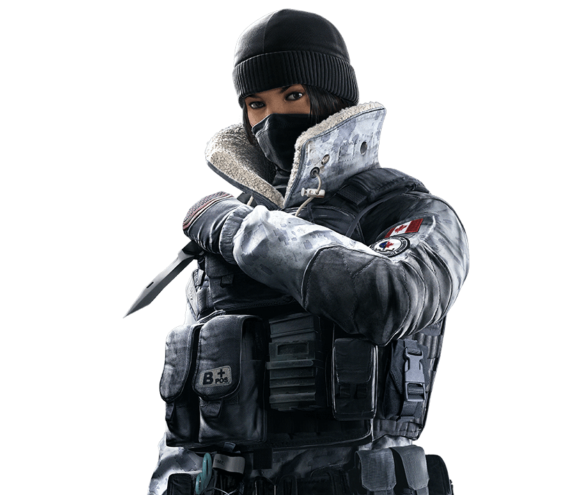

Имя:Тина Лин Цзан
Рост:1,72 м
Вес:63 кг
Подразделение:JTF2
Страна: Канада
Дата рождения:4 мая 1985 года
Тина «Frost» Лин Цзан (англ. Tina Lin Tsang) – один из оперативников защиты, представленных в Tom Clancy's Rainbow Six: Siege. Представлена в операции «Black Ice», наряду с Buck. Она оснащена средним показателем брони и скорости. Может использовать ловушку «Sterling MK2 LHT».
Цзан родилась в Ванкувере. В 18 лет поступила на службу в Королевские ВВС Канады и отправилась на учёбу в Королевский военный колледж Канады. По получению степени бакалавра и прохождении офицерской подготовки в составе группы Центра координации спасательных операций «Виктория» была приписана к базе канадских сил «Комокс».
«Sterling MK2 LHT» – механическая ловушка-капкан, обезвреживающая врагов. Устанавливается на полу на ровной поверхности. При прохождении через капкан, противник переходит в состояние «Павший, но не умерший» и теряет возможность передвигаться. Если Zofia попадёт в капкан, то она не может встать самостоятельно. При активации капкан издает громкий хлопок, а так же попавший в него оперативник начинает стонать, выдавая себя. Caveira может допросить оперативника штурмотряда, если он попал в капкан. Уничтожается выстрелами из любого оружия, или же от любого взрыва.